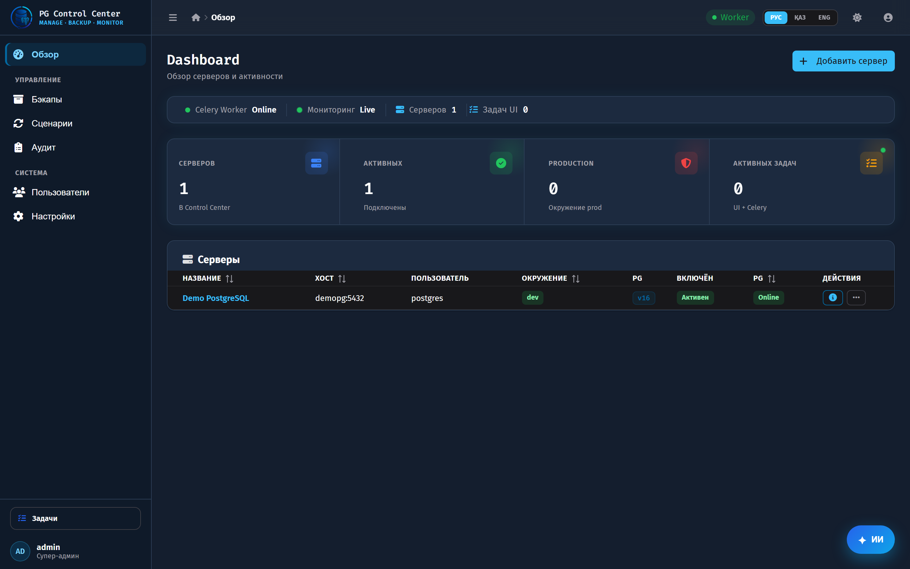
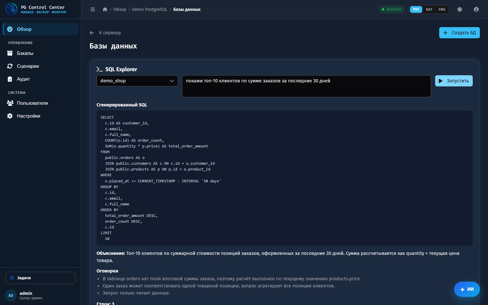
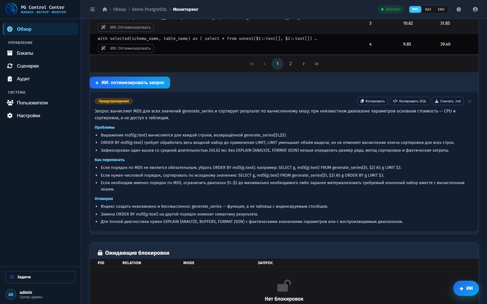
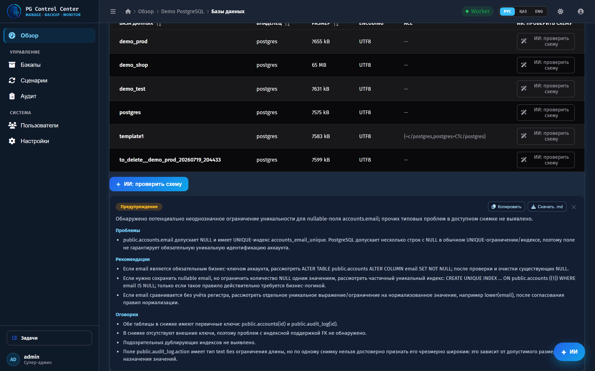
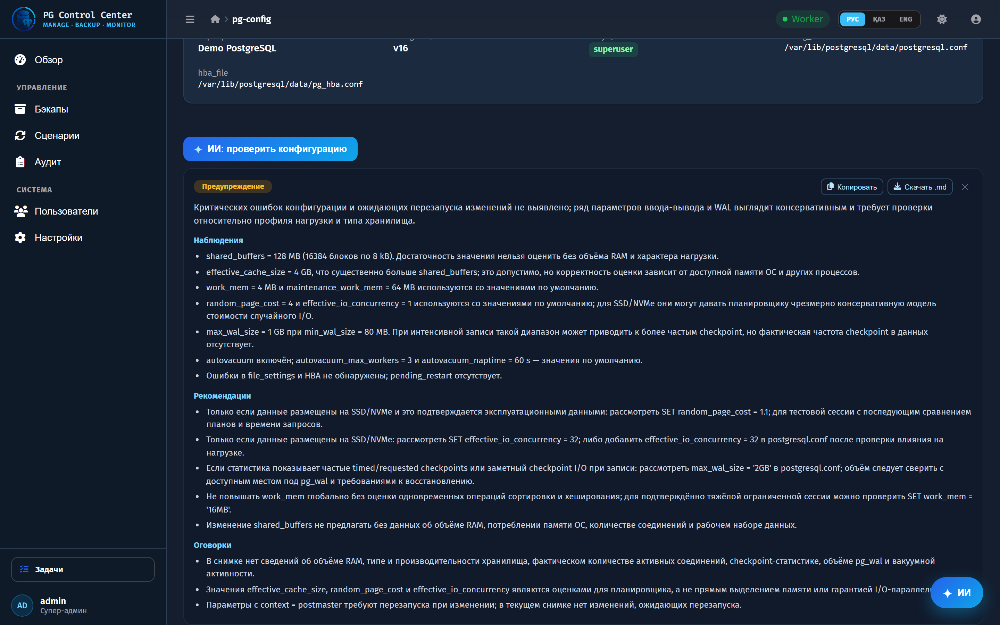
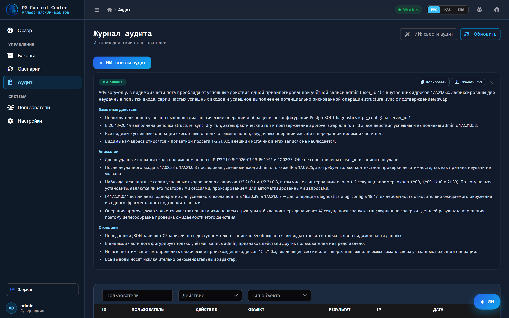
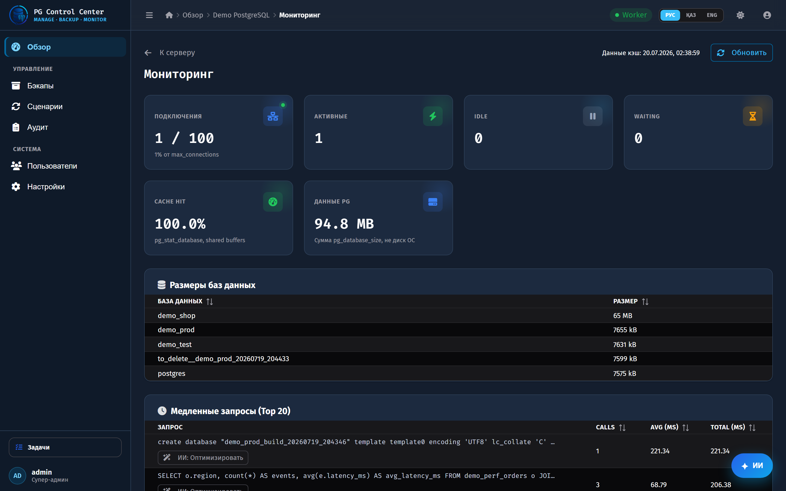

A control center for PostgreSQL fleets — servers, backups, structure migrations, diagnostics. Deterministic code computes the facts; OpenAI explains the risk and sequences a safe plan. The AI advises. It never pulls the trigger.
Each feature feeds the model real state and gets back a strict JSON verdict — risk level, findings, safe order, rollback — rendered as a card, not a wall of text.
Reads the generated SQL diff for a test → prod structure sync and returns risk, concrete risks, a safe apply order, and rollback steps.
A floating panel on every screen. Ask "how do I move structure from test to prod safely?" — get a practical, PostgreSQL-aware answer with commands and caveats.
After a server health check, classifies severity, says what's wrong, and recommends concrete fixes — grounded in the actual check results.
Before a restore, weighs real backup history per database and flags exposure — what to verify, what to watch.
The strongest LLM layer is the thinnest one: let deterministic systems establish ground truth, then use the model for the part humans are slow at.
Catalog-level schema diff, backup history, health checks — computed, not guessed.
Chat Completions with JSON mode. Returns risk, ordered steps, rollback — strictly typed.
Controlled Celery jobs, approval gate, verify, atomic swap. The AI never executes.
Real PostgreSQL servers, real pg_dump to S3/MinIO, real structure migrations with a verify step — and it installs the matching pg-client version per server on demand.
The model reasons over real diffs, backup state, and diagnostics — so the plan is specific and reproducible.
The AI never runs SQL. Every real operation is a gated, verifiable job with rollback.
Strict JSON turns "a chatbot" into a feature — predictable cards, not a text dump.
Set the OpenAI key in the UI, encrypted at rest, hot-applied with no restart or .env edits.
Every screen below is the running app answering on real OpenAI — captured end to end.






